11 Créditos das Imagens
As imagens utilizadas ao longo deste livro foram selecionadas de forma a garantir acessibilidade, clareza didática e respeito aos direitos autorais. Parte delas foi obtida no repositório Wikimedia Commons (Figura 11.1, Figura 11.2, Figura 11.3, Figura 11.4, Figura 11.5, Figura 11.6, Figura 11.7, Figura 11.8, Figura 11.9, Figura 11.10, Figura 11.12, Figura 11.13, Figura 11.14), que disponibiliza conteúdos sob licenças livres, permitindo seu uso e adaptação com a devida atribuição. Complementarmente, algumas imagens foram geradas com o auxílio de ferramentas de inteligência artificial, como ChatGPT (Figura 11.16, Figura 11.17, Figura 11.18, Figura 11.19, Figura 11.20, Figura 11.21, Figura 11.22, Figura 11.23, Figura 11.24, Figura 11.25, Figura 11.26, Figura 11.27, Figura 11.28, Figura 11.29 e Figura 11.30) e Gemini (Figura 11.15), com o objetivo de ilustrar conceitos específicos de maneira personalizada. Sempre que aplicável (Figura 11.11), buscou-se indicar a origem e a licença das imagens, assegurando transparência e conformidade com as boas práticas de uso de conteúdo visual.
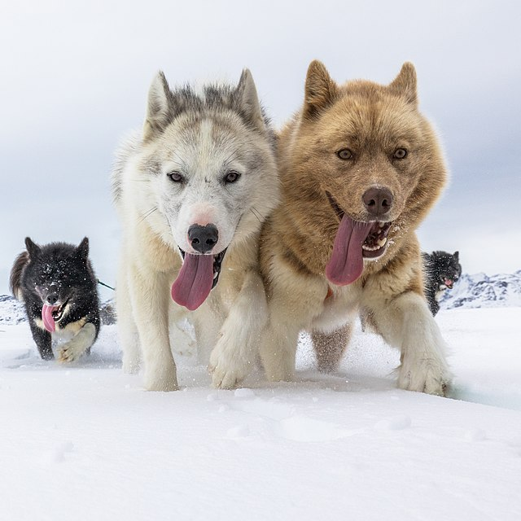
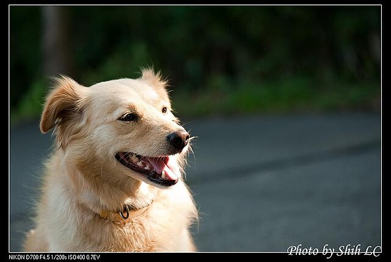

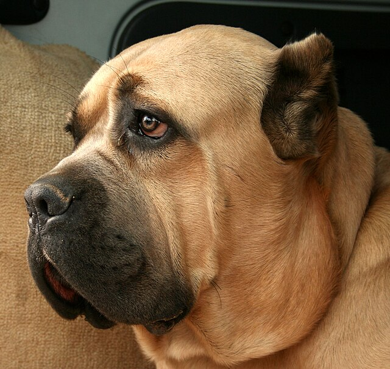
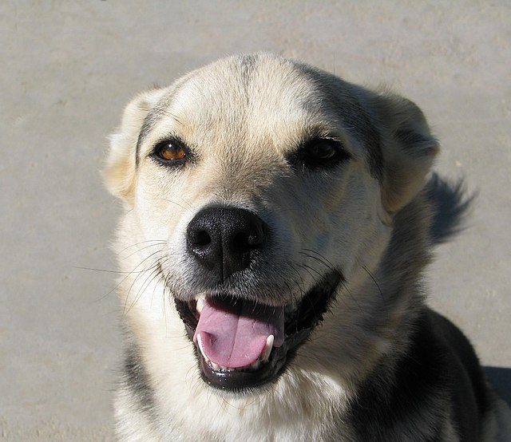
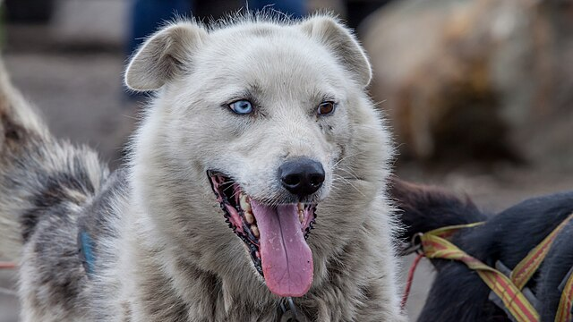
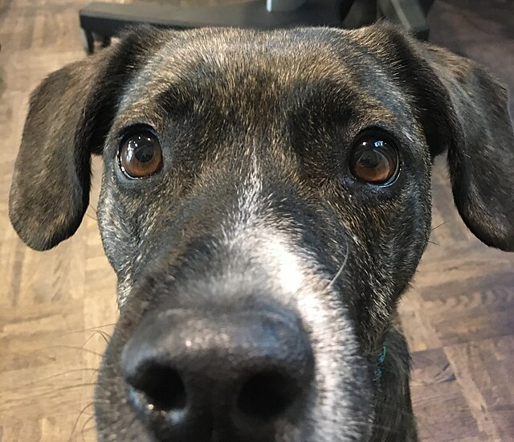
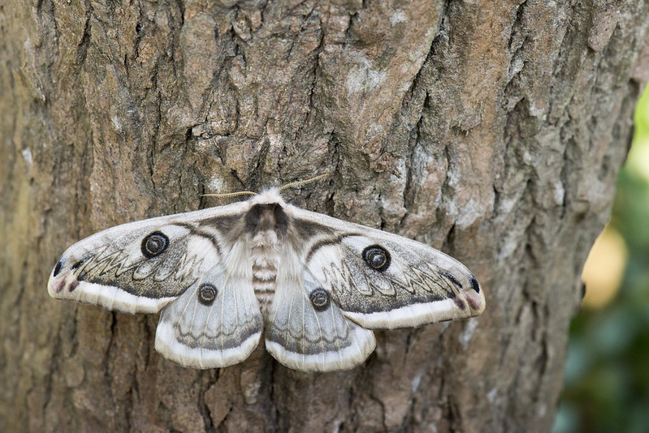
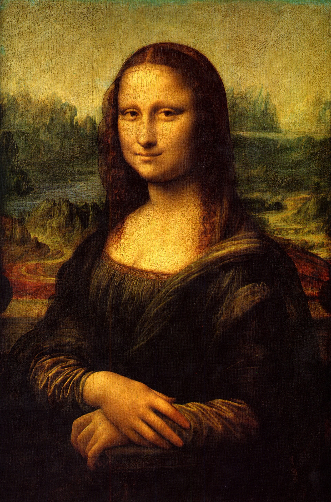
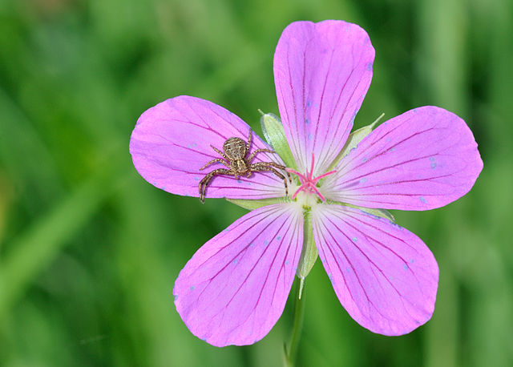
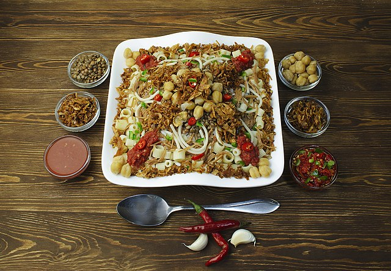
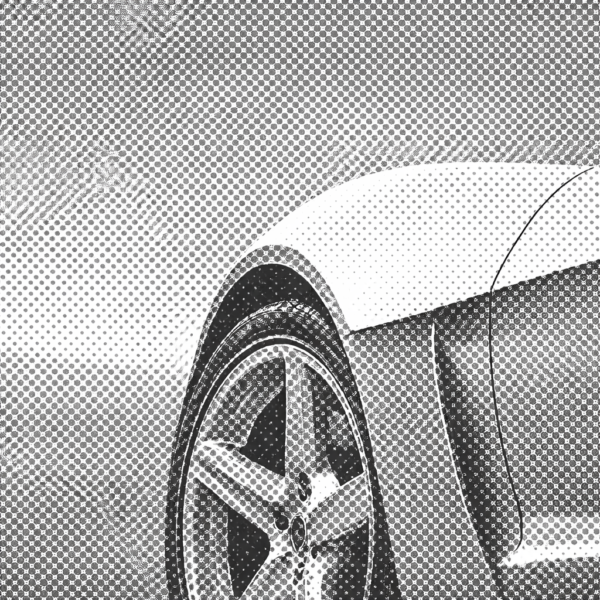
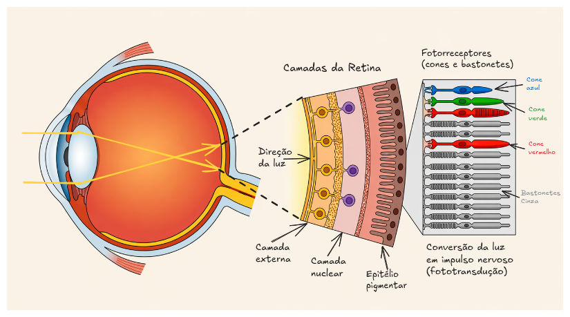
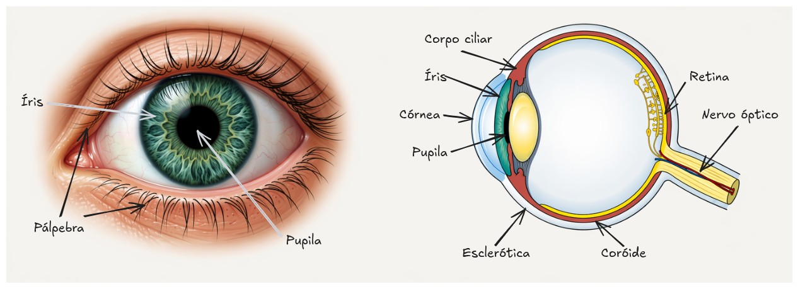
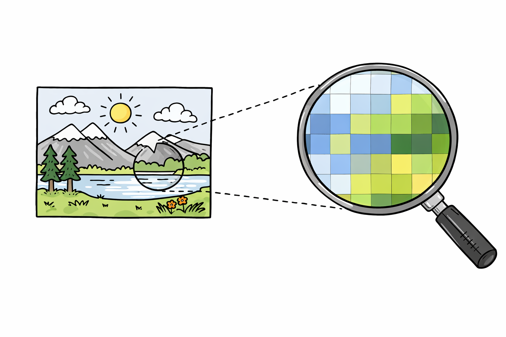


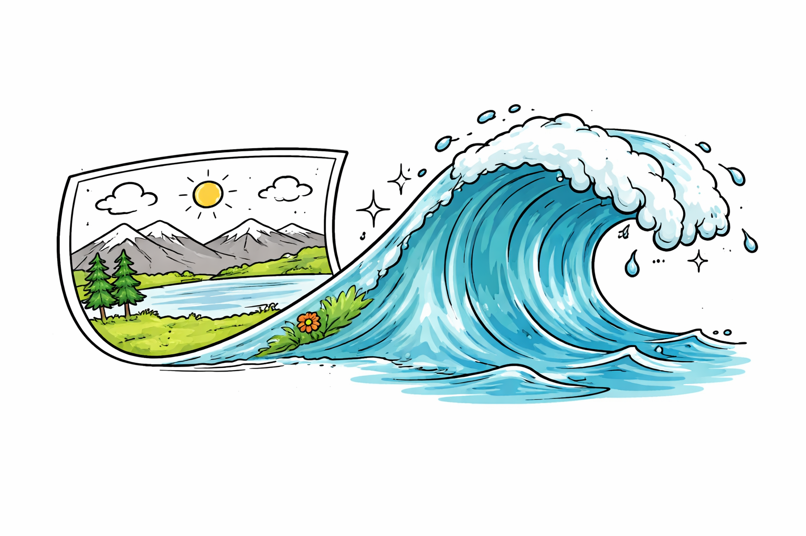

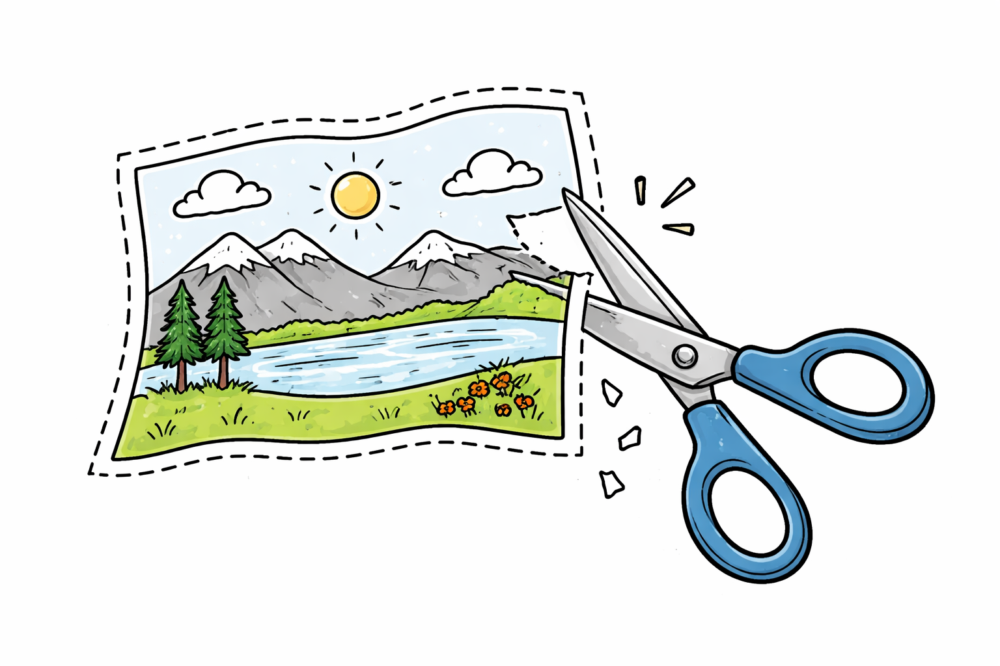

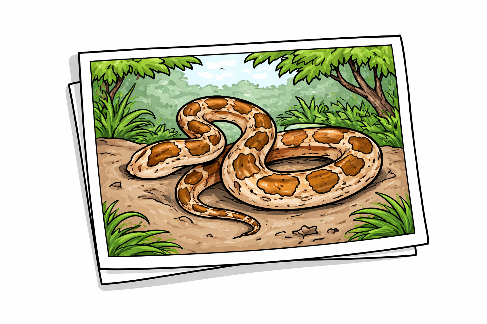